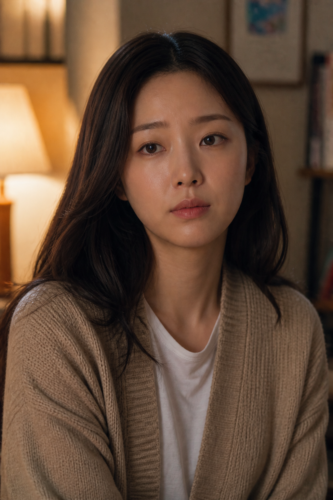
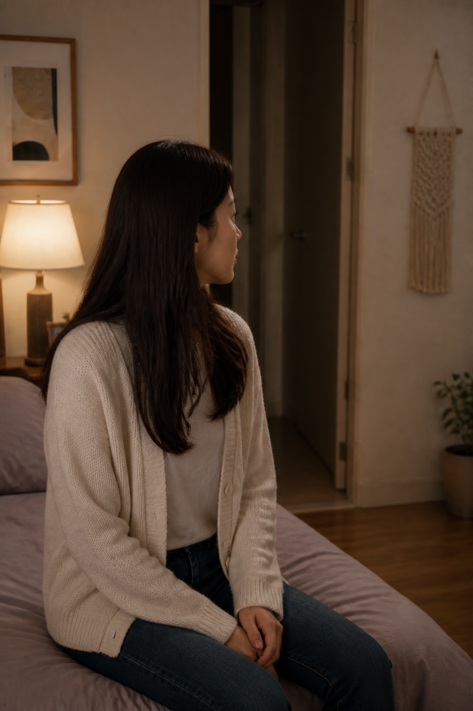
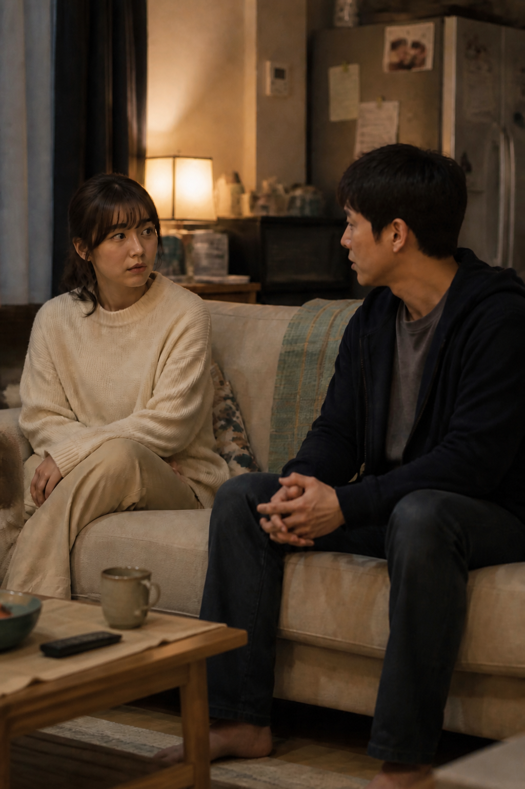
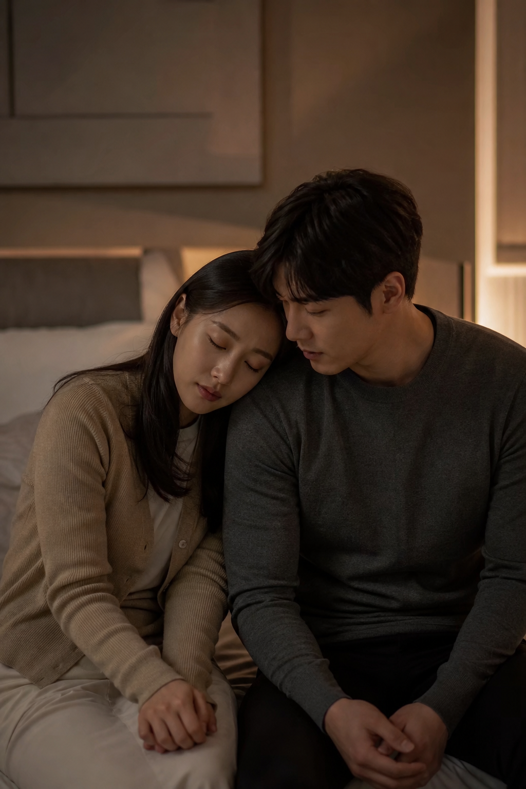
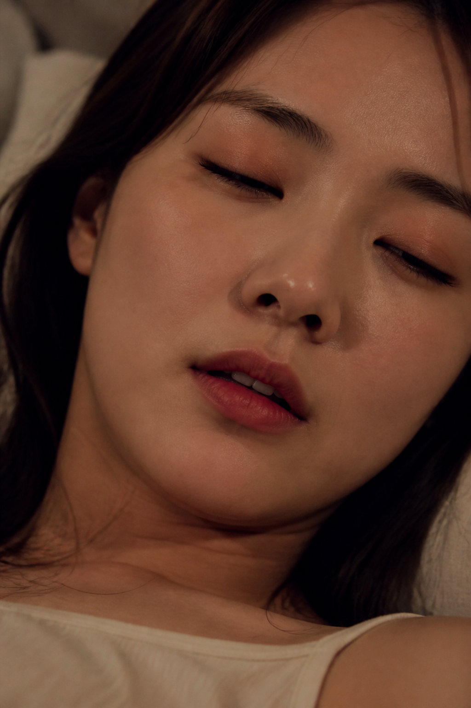
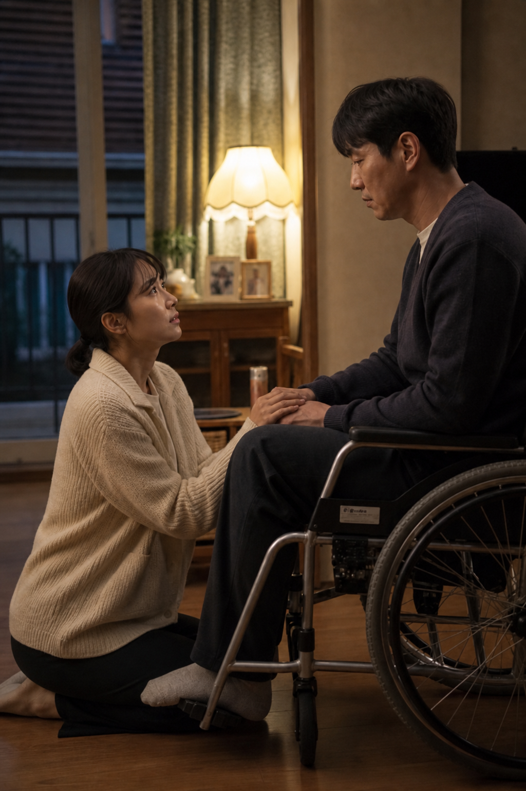
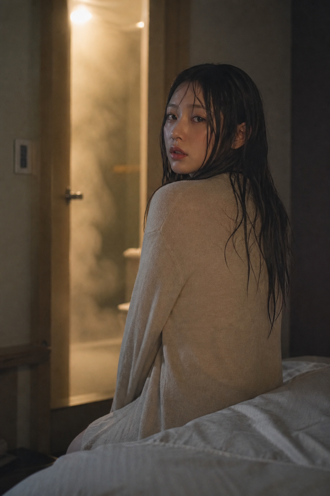
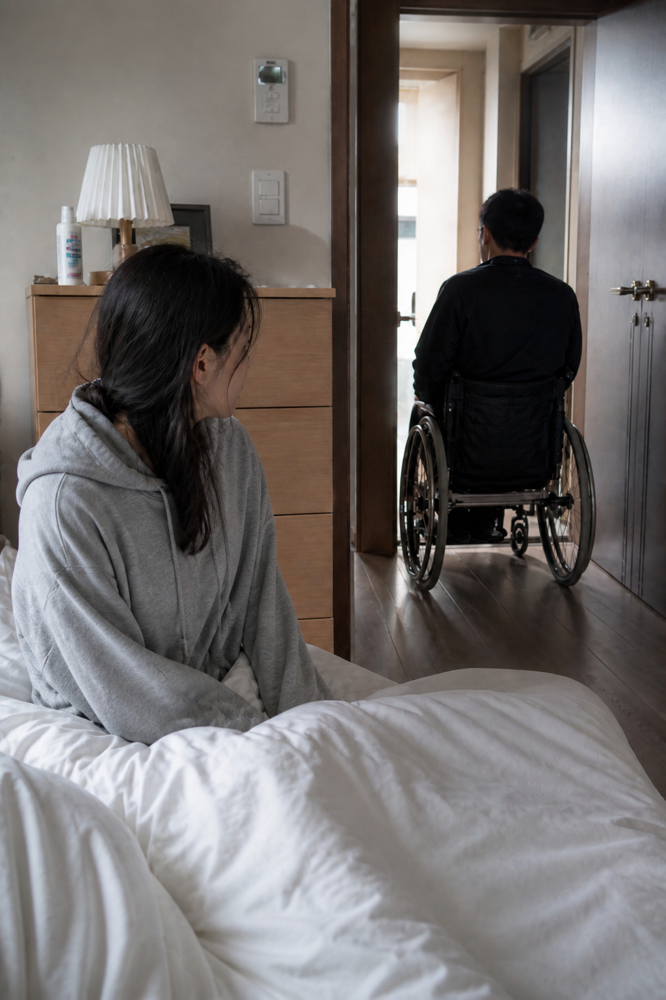
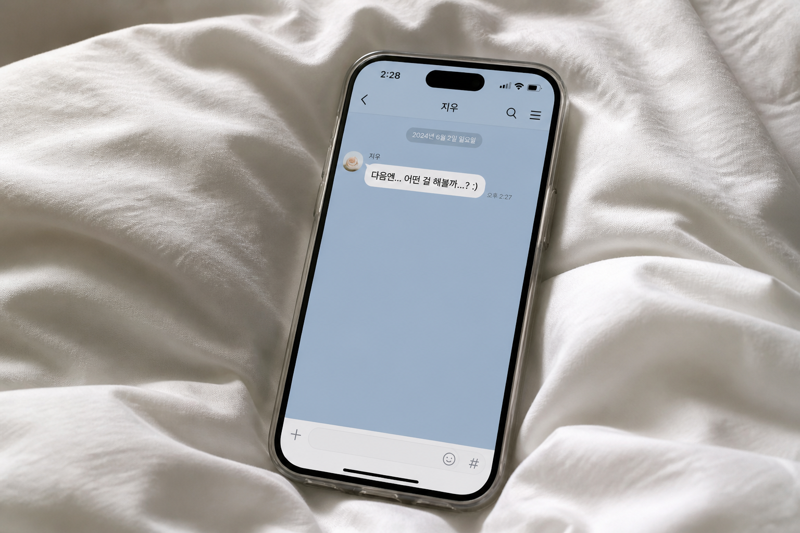

서윤…오늘도 …괜찮을까요?
이미 한 번은 선을 넘었다. 이제는, 서로를 조금 더 원하고 있었다.
누군가의 봄
EP.9 더 깊어지는 관계

이미 한 번은 선을 넘었다. 이제는, 서로를 조금 더 원하고 있었다.

이제는 어색하지 않다. 그는 자연스럽게 내 방을 찾고, 나는 자연스럽게 그를 기다린다.

조심히 다가가던 길은, 이제 망설임이 없다.

처음엔 조심스러웠지만, 이제는 먼저 다가간다. 그의 반응에 맞춰, 더 깊이 빠진다.

처음엔 숨소리만 방을 채운다. 이제 말보다 행동이 많다. 두 사람은 서로에게 더 솔직해진다.

그의 불편한 몸은 이제 둘에게 장애가 아니다. 오히려 서로를 더 애타게 만든다.
모든 것이 끝난 뒤에도 그녀는 오래 그의 품에 머문다. 이젠 끝이 아니라, 다음을 기대하는 시간이다.

낯설었던 처음과 달리, 이제는 모든 것이 자연스럽다. 그녀는 더 이상 망설이지 않는다.

짧은 밤이었지만, 그녀에게는 특별한 시간이 되었다. 이제 둘은 서로를 더 원하게 되었다.
그가 돌아간 뒤에도 그녀의 마음은 쉽게 가라앉지 않는다. 이제 그는 단순한 ‘고객’이 아니다.

조금씩, 깊어지는 관계. 누구의 잘못도 아닌, 두 사람의 선택이었다.
누군가의 봄
EP.10 멈출 수 없는 마음
이제, 우리는 조금 더 솔직해진다.